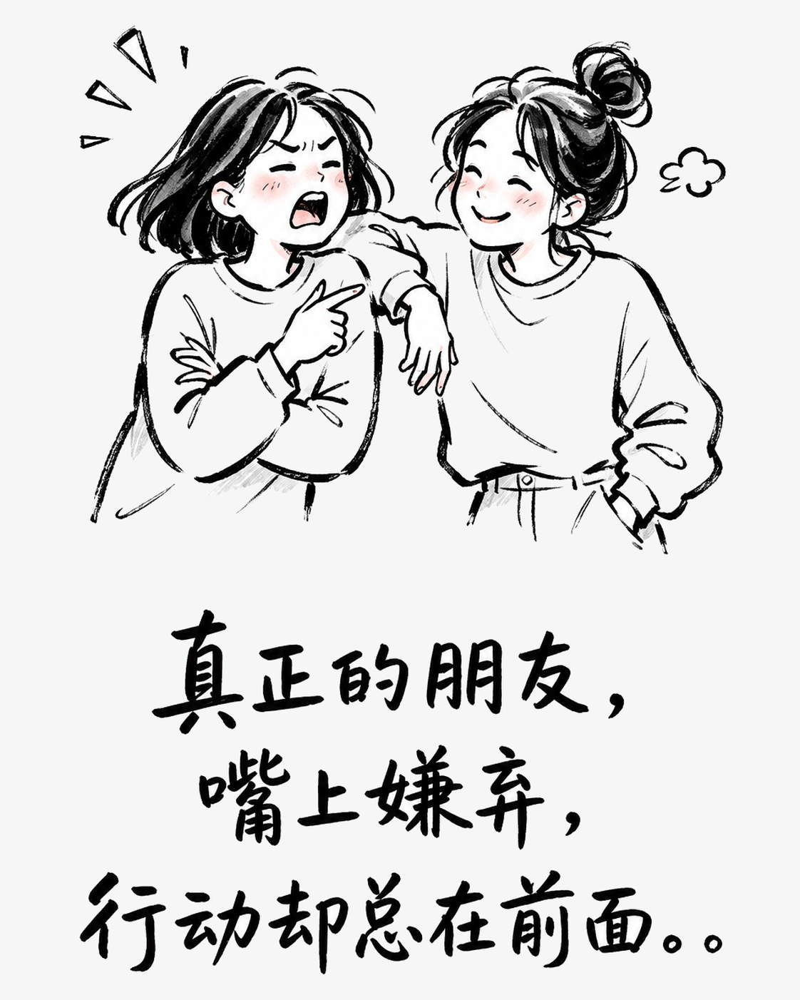
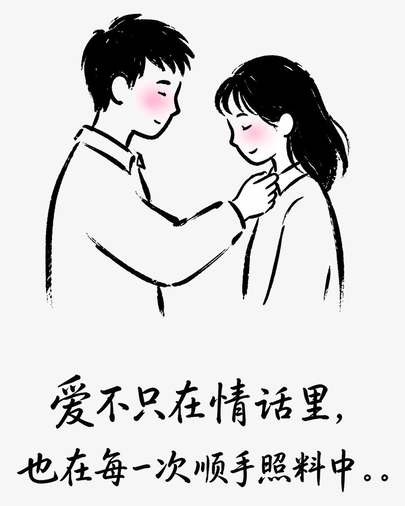
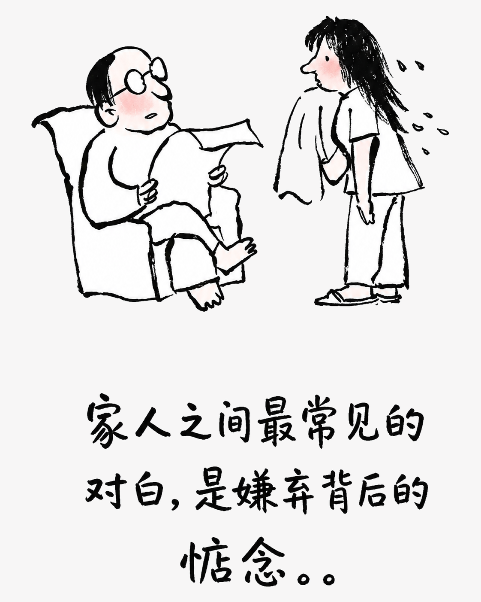

真正的在乎，藏在那些不必说出口的事里
有些关系看似总在互相嫌弃，实际上却把关心落在每一次及时回应和默默帮忙里。
人与人之间最踏实的感情，往往没有漂亮话。它藏在你开口之前，对方已经准备好的回应里，也藏在嘴上抱怨、手上却从未停下的细节中。
朋友：敢麻烦，也愿意接住
真正的朋友，不会把帮忙说得多么伟大。你临时出差，她一边嫌你会添麻烦，一边把家里的猫照顾得妥妥帖帖；你搬家，她嘴上说累，下一次却提前带好推车。你困难时，她愿意先替你挡一挡；你缓过来后，再用一顿饭把谢意放进去。人情不必急着结算，因为彼此都知道，往后的日子还长。

伴侣：日子是一起做出来的
亲密关系不是永远温柔体贴，而是你说饿了，他嘴上嫌你不早点吃饭，转身却把热食送到面前；你情绪低落，他未必会说动听的话，却会把该做的事接过去。两个人一起分担家务、照顾彼此，很多感谢没有说出口，却早已变成习惯。能放心麻烦对方，是关系里的安全感。

家人：嘴硬，心一直软着
家人的关心常常披着唠叨的外衣。父母会嫌你不会照顾自己，却总记得准备你爱吃的菜；他们说只是借给你的钱，转身又用另一种方式送回来。兄弟姐妹之间可以把金额、期限说清楚，却很难把牵挂算明白。家人不是没有争执，而是争执过后，仍然会为你留一盏灯。
